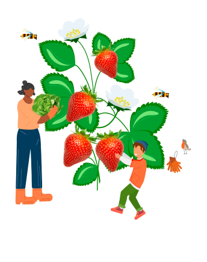
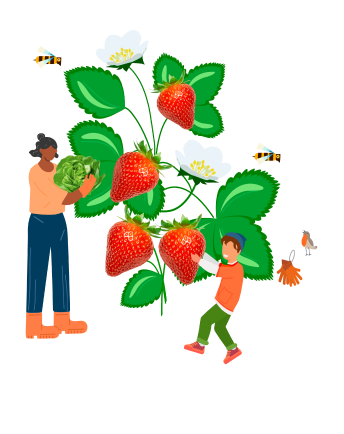
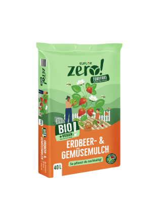
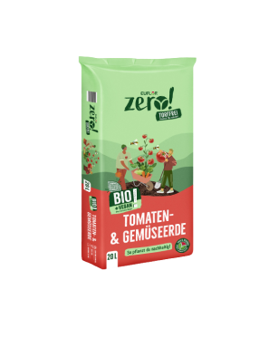
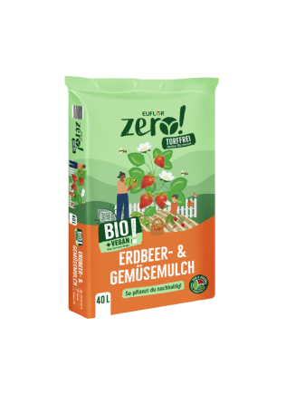
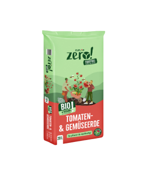

Hier muss noch eine Subline stehen
VERÄNDERTE STRUKTUR
Torffreie Erden haben eine gröbere Struktur. Du merkst es, wenn du in die Erde hineingreifst.
Heller Farbton
Torf macht die Erde dunkler. Heißt im Umkehrschluss: torffreie Erden sind heller.
Keine Graberde
Wenn du eine nachhaltige Graberde suchst, dann empfehlen wir X. Die meisten torffreien Erden sind zu hellund sehen auf einem Grab nicht angemessen aus.
GIESSEN
Torffreie Erden haben eine gröbere Struktur. Du merkst es, wenn du in die Erde hineingreifst.
WeißSliche Oberfläche
Die Erde kann manchmal einen weißen Flaum ansetzen, dabei handelt es sich um eine ungefährliche Pilzschicht.
WENIGER UNKRAUT
Die oberste Erdschicht trocknet etwas schneller – das bedeutet regelmäßigesGießen, aber gleichzeitig auch weniger Unkraut.
 

Torf ist groSßartig. Torfabbau nicht.
Torf und Erde – die beiden habe eine lange Tradition. Fast in jeder Blumen-, Pflanz- und
Gemüseerde hat irgendwann mal Torf gesteckt – oder tut es noch.
Doch warum ist es jetzt plötzlich ein Problem, mit Torf zu gärtnern?
Wo kommt der Torf eigentlich her? Diese Frage führt uns auf direktem Weg zum Problem. Denn Torf stammt aus (entwässerten) Mooren.Seit Jahrzehnten wird Torf abgebaut und dabei werden Ökosysteme zerstört. Somit verschwindet immer mehr Lebensraum von spezialisiertenTier- und Pflanzenarten, die auf das Moor angewiesen sind. Es war also eigentlich schon immer ein Problem. Aber das ist noch nicht alles …
Wir sind ein mittelständisches Unternehmen. Kein Weltkonzern, kein Start-up. Bei uns kennt jeder jeden – zumindest nach dem letzten Teamevent. Du arbeitest in flachen Hierarchien und definitiv unter einer Führungskraft, die dich kennt, fördert, fordert und deine Leistung zu schätzen weiß. Bei uns bist du nicht nur eine Mitarbeiternummer.
Das trifft auf Erde zu, aber noch mehr auf unser Team. Unterschiedliche Kompetenzen, unterschiedliche Ausbildungen, unterschiedliche Aufgaben. Aber trotzdem arbeiten wir als Team. Das ist das Wichtigste. Siehst du das genauso? Bei uns bist du nicht auf dich allein gestellt. Wir arbeiten als Team zusammen, unterstützen uns gegenseitig und selbstverständlich wirst du auch richtig an deine Arbeit herangeführt und eingearbeitet. Unsere Meinung: Kollegen sind dazu da, sich den Rücken freizuhalten. Da ist es auch kein Wunder, dass hier keine hohe Fluktuation herrscht. Wir arbeiten gerne zusammen bei Stender.
Das trifft auf Erde zu, aber noch mehr auf unser Team. Unterschiedliche Kompetenzen, unterschiedliche Ausbildungen, unterschiedliche Aufgaben. Aber trotzdem arbeiten wir als Team. Das ist das Wichtigste. Siehst du das genauso? Bei uns bist du nicht auf dich allein gestellt. Wir arbeiten als Team zusammen, unterstützen uns gegenseitig und selbstverständlich wirst du auch richtig an deine Arbeit herangeführt und eingearbeitet. Unsere Meinung: Kollegen sind dazu da, sich den Rücken freizuhalten. Da ist es auch kein Wunder, dass hier keine hohe Fluktuation herrscht. Wir arbeiten gerne zusammen bei Stender.
Ja. Es ändert sich was …
So pflanzt du mit
torffreien Erden an
 
zero!
Die zero! ist ein Sortiment aus 12 nachhaltigen Erden. Modern, nachhaltig und einfach einbisschen anders. So sorgt die zero! für ein gutes Gewissen und beste Ergebnisse beim Gärtnern.
Plantahum torffrei
Plantahum ist Powererde – schon immer gewesen. Jetzt gibt es sie endlich auch in komplett torffrei. Ein wichtiger Schritt auf unserem Weg zuausschließlich umweltfreundlichen Erden.
NACHHALTIG.
KRAFTVOLL.
TORFFREI.
Power im Beet. Komplett nachhaltig. Das ist Plantahum torffrei. Das ist unsere zero! Linie. Mit diesen nährstoffreichen Erden sind deine Pflanzen immer bestens versorgt. Für bis zu 12 Wochen vorgedüngt, sorgen unsere Erden dafür, dass deine Pflanzen bekommen, was sie brauchen.
Die Folge: Tolle Blüten, ein schöner Garten, reiche Ernte.Auf unsere torffreien Erden kannst du dich verlassen.
Auch ohne Torf.
Torffrei
Alle EUFLOR Erden sind 100 % torffrei. Kein Moorboden wurde zerstört, um deine Erde herzustellen.
NACHHALTIG
Wir verwenden nachwachsende und nachhaltige Rohstoffe, um deine Erde zu produzieren.
KLIMAFREUNDLICH
Maximal CO₂-reduziert. Ökologischen Fußabdruck minimiert.
POWER IM BEET
Der beste Start für Pflanzen. Langanhaltende Nährstoffversorgung bildet die gesunde Basis.
BLÜTENPRACHT
Fördert die Blütenbildung. Lässt deinen Garten in voller Pracht erstrahlen.
220.000 Tonnen im Jahr
Dein Beitrag zum Klimaschutz
Du greifst zu einer torffreien Erde? Dann leistest du einen echten Beitrag zum Klimaschutz. Denn jetzt wird
weniger Torf abgebaut und so bleibt das CO₂ im Boden gespeichert.
Natürlich gibt es 1000 weitere Dinge, die man tun kann, aber irgendwo muss man anfangen.
Und das ist ein wichtiger Anfang.
MOORE — UNSERE GRÖSSTEN KOHLENSTOFFSPEICHER
Weltweit gespeicherter Gesamt-Kohlenstoff (C) nach Ökosystemen
{kind=link}
Hast du noch
Fragen?
Im geschlossenen Sack ca. 1 Jahr. Hast du den Sack bereitsgeöffnet, dann solltest du die Erde innerhalb von 3 Monaten verarbeiten. Wenn du Erde einlagern willst, dann bieten sich dafür trockene, unbeheizte Kellerräume an. Aber auch Gartenhaus, Schuppen und Garage sind kein Problem, solange sie trocken sind.
Ja, das ist kein Problem. Unsere Empfehlung: Der EUFLOR Bio Dünger ist perfekt auf unsere torffreien Erden abgestimmt.
Nein. In deinem Garten kannst du mit gutem Gewissen alles in torffreier Erde anpflanzen. Achte darauf, regelmäßiger, aber dafür etwas weniger zu gießen – dann steht deinen gesunden Pflanzen nichts im Weg.
Zumindest die Erde nicht.
Ja. Wir arbeiten ständig an unserer Formel.Wir haben als oberstes Ziel, eine absolut nachhaltige Erdemit ausschließlich regionalen Zuschlagstoffen herzustellen.
Natürlich darf darunter niemals die Qualität leiden. Alle unsere Erden werden vorher ausführlich aufihre Qualität getestet.
ENTDECKE DIE zero!
Du willst nachhaltig gärtnern? Du willst ordentlich Power im Beet?
Dann schau dir unbedingt unsere zero! Linie an.
Komplett nachhaltig. Torffrei.
Und für jede Anwendungsart eine eigene Erde.